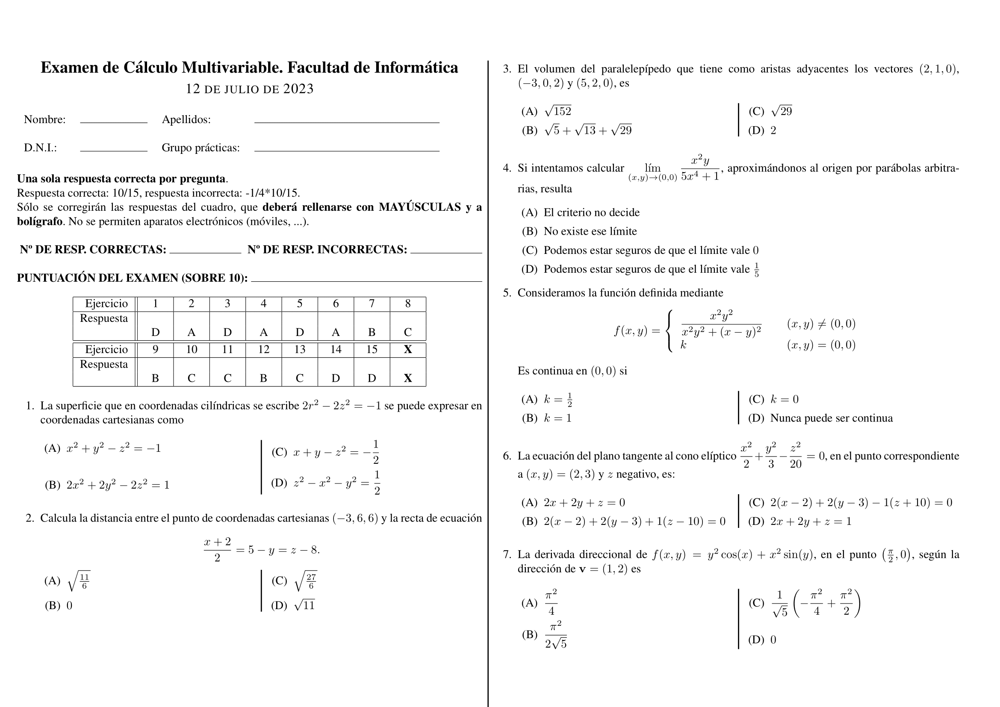
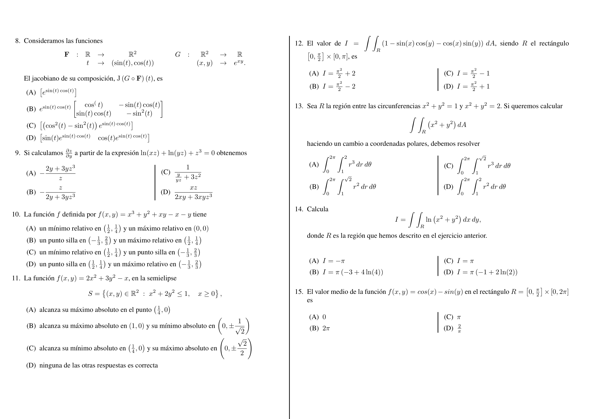

Skip to main content
Back to top
Ctrl
+
K
Search
Ctrl
+
K
1. Vectores y geometría del espacio
1.1. Vectores en el plano
1.2. Vectores en el espacio
1.3. El producto escalar
1.4. El producto vectorial
1.5. El producto triple
1.6. Rectas y planos en el espacio
1.7. Superficies en el espacio
1.8. Coordenadas cilíndricas y esféricas
1.9. Boletín de ejercicios del primer capítulo
2. Límites y continuidad
2.1. Funciones de varias variables
2.2. Límites
2.3. Continuidad
2.4. Boletín de ejercicios del segundo capítulo
3. Derivación y extremos
3.1. Derivadas parciales
3.2. Derivadas direccionales y gradiente
3.3. Diferenciabilidad
3.4. Plano tangente
3.5. Regla de la cadena
3.6. Extremos relativos en 2D
3.7. Extremos absolutos
3.8. Aplicaciones del cálculo de extremos
3.9. Ejercicios. Secciones 3.1 - 3.5
3.10. Ejercicios. Secciones 3.6 - 3.8
4. Integración
4.1. Revisión una variable
4.2. Integración 2D
4.3. Integrales dobles
4.4. Cambio de variable
4.5. Integrales triples
4.6. Boletín de ejercicios del cuarto capítulo
5. Pyhton para cálculo de varias variables
5.1. Introducción a SymPy
5.2. Introducción a NumPy
5.3. Representación Gráfica con Matplotlib
5.4. Límites y continuidad con Python
5.5. Derivadas con Python
5.6. Extremos (relativos y absolutos) con Python
5.7. Integracion con Python
6. Exámenes
6.1. Examen tipo, 3 primeros temas
6.2. Examen tipo, cuarto tema
6.3. Curso 2022-23. Examen 1ª oportunidad
6.4. Curso 2022-23. Examen 2ª oportunidad
.md
.pdf
Curso 2022-23. Examen 2ª oportunidad
6.4.
Curso 2022-23. Examen 2ª oportunidad
#


{kind=link}
{kind=link}